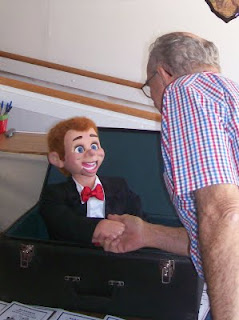
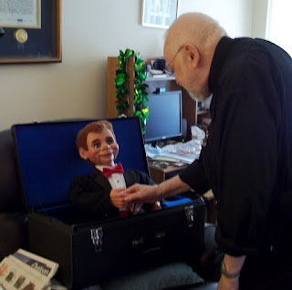
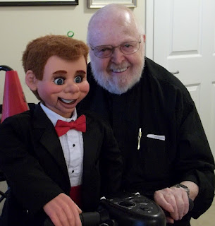

A "ressurrection" of sorts...
4/8/2012
You may remember some months ago when I brought you the account of ventriloquist Brent Vernon's van being broken into while on tour and all his performance equipment being stolen, including his vent figure, "Sam". Sam was a "Comical Clyde" Knee Pal for which the mold no longer exists, so I asked on this blog if any reader might possibly have that character they would be willing to sell to Brent as a replacement for his stolen figure. That's when Canon John Jordan stepped up and offered his beloved "Sweeny" as "Sam's" replacement. (Not an easy decision for any ventriloquist!)
But before Sweeny could enter the concert world as Sam, several changes had to be made in his appearance, including a change of eye color, hair color, and style. So Sweeny was sent to me for his "make-over" before travelling to join Bent Vernon's music ministry. Upon Sweeny's arrival, I took a picture:
 |
| "Welcome to Colorado, Sweeny!" |
{kind=link}
While making the necessary cosmetic changes so "Sweeny 1.0" could enter the world as "Sam 2.0" (as the three of us began referring to the figures), I thought how great it would be if I could take a little extra time to create a clone of Sweeny 1.0 to serve as a replacement for the figure Canon John Jordan had given up. All parties agreed - thus, "Sweeny 2.0" was born! Just a few weeks ago, "Sweeny 2.0" was completed and shipped to Canon Jordan for a most joyous reunion!
 |
| "Welcome home to Thunder Bay little Chum. I've missed you!" |
{kind=link}
 |
| Ready to roll ! |
{kind=link}